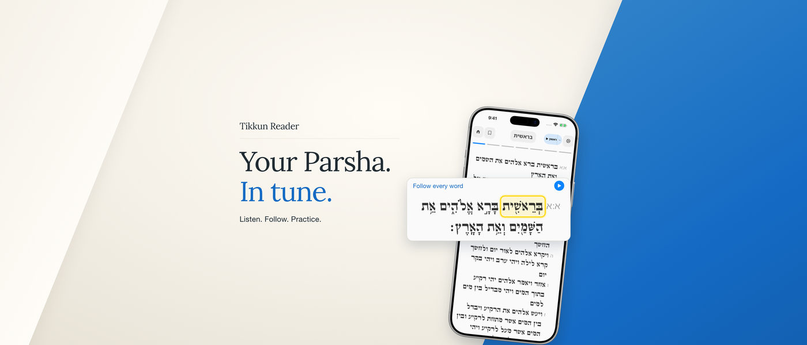
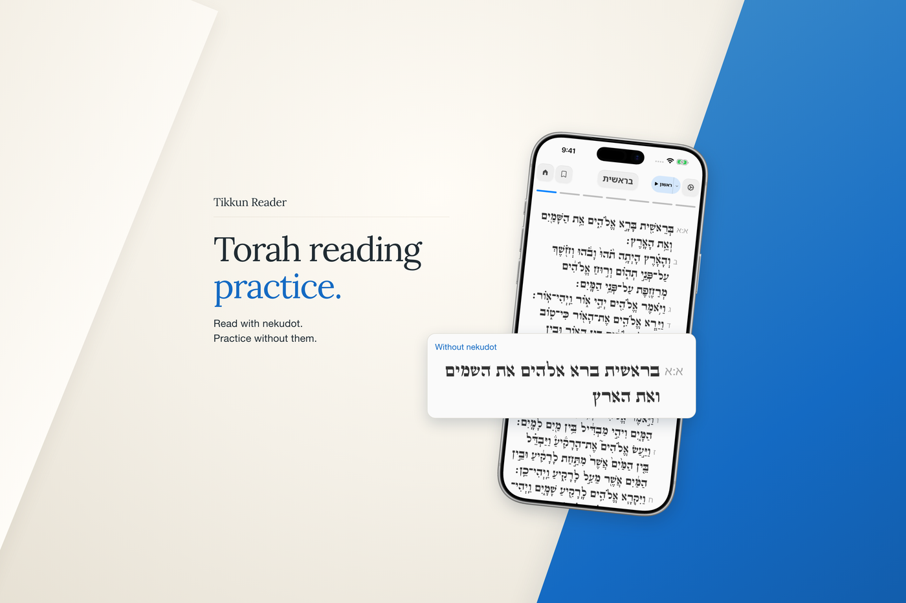
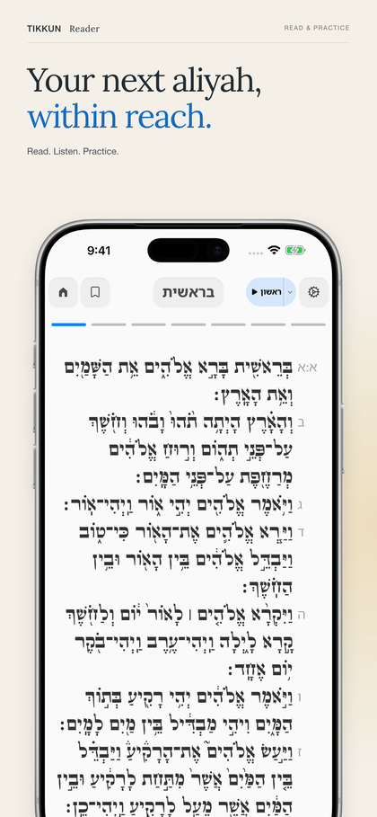
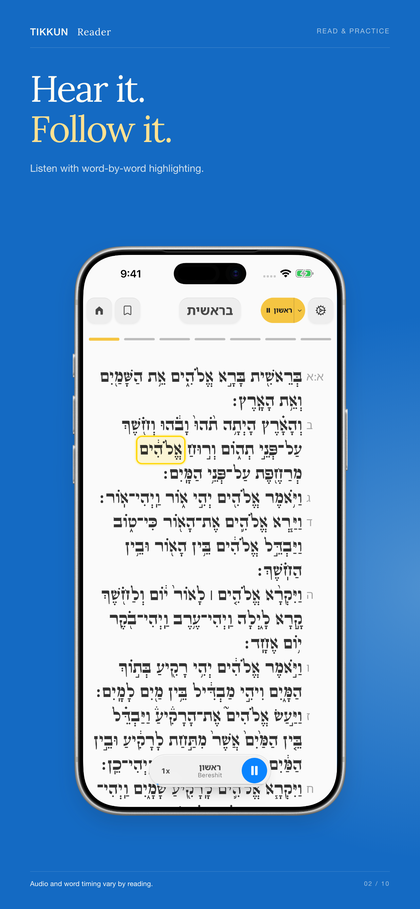
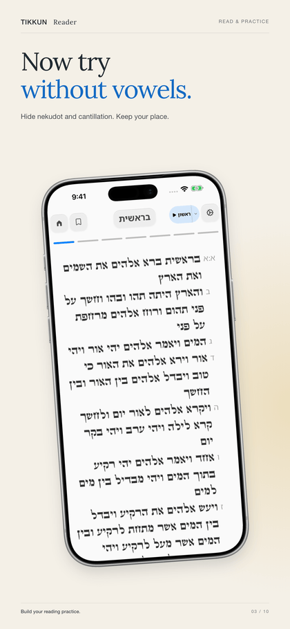
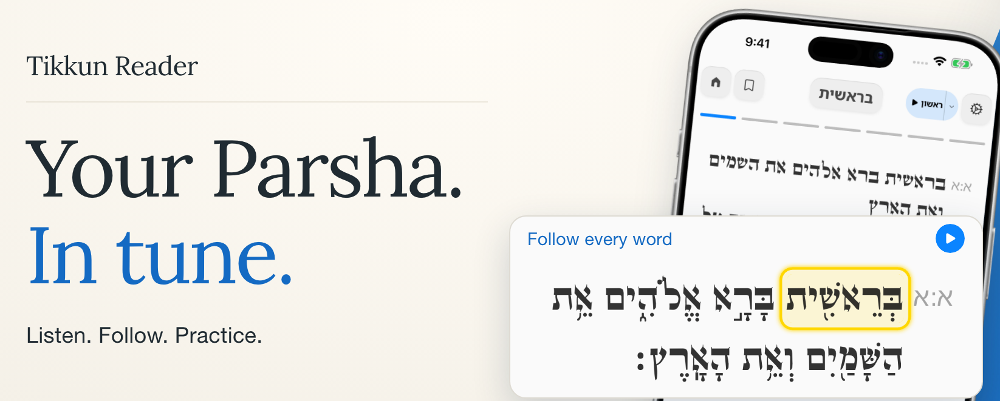
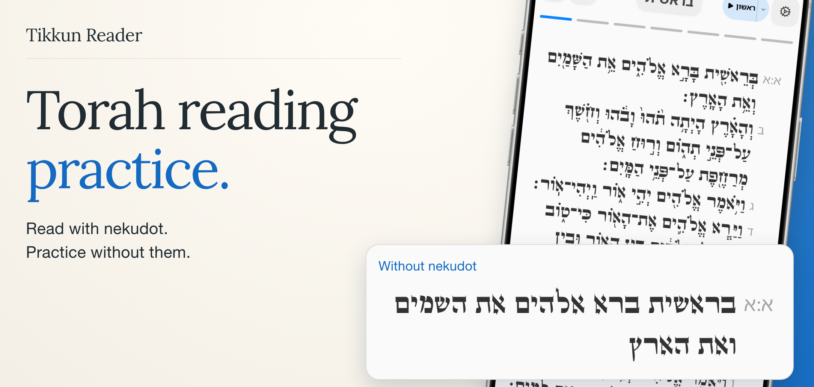

Two coordinated App Store images: an audio-focused product-page header and a search image that demonstrates reading with and without nekudot.

3840 x 1646 · Opaque RGB PNG · Full-resolution image

3840 x 2560 · Opaque RGB PNG · Full-resolution image
Local simulations at phone viewing size. Store cropping and account eligibility require App Store Connect preview. Existing screenshot thumbnails provide context.



Only the art-safe rectangles from Apple's Photoshop templates are shown here. These are stress-test crops, not predictions of exact store framing.

